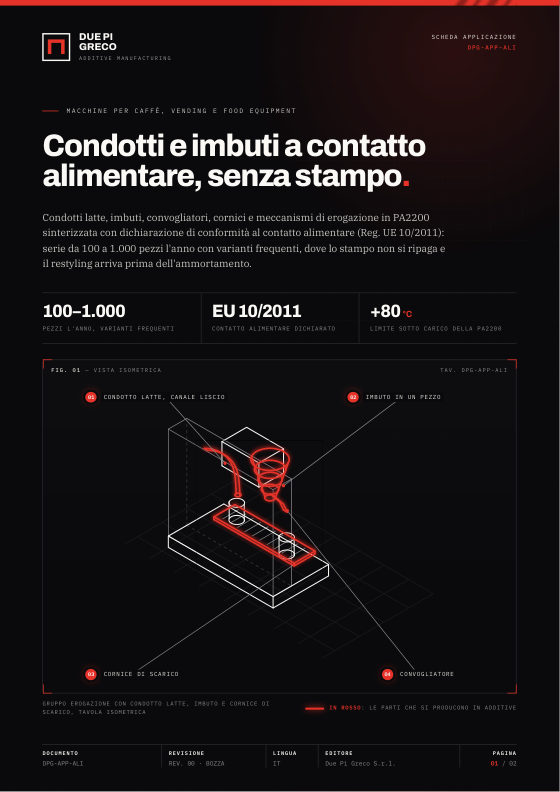
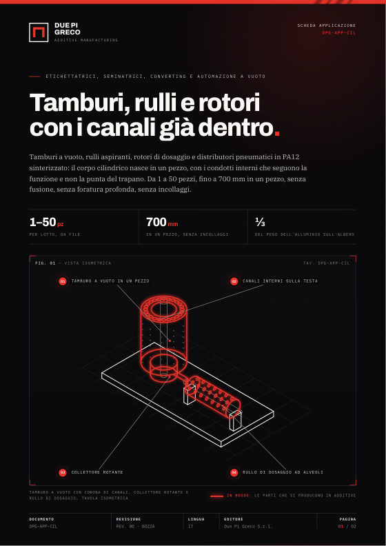
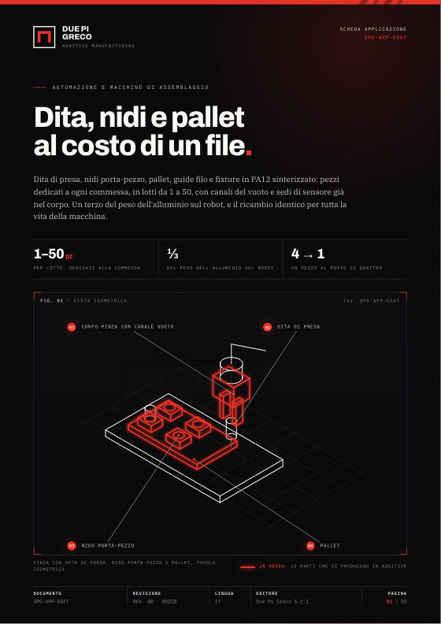
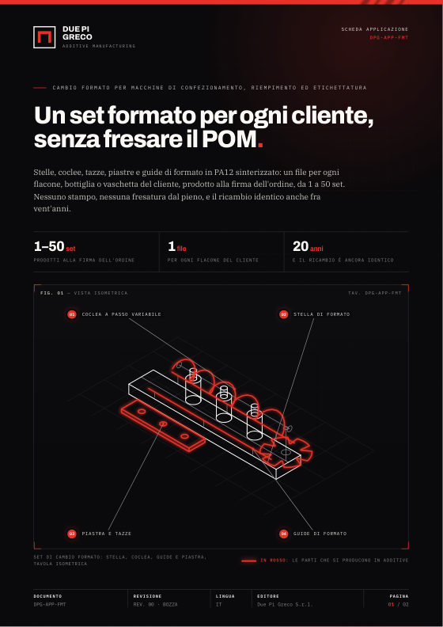
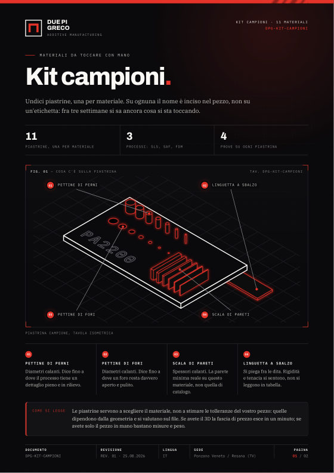

Design, ingegnerizzazione e additive manufacturing ad alte prestazioni. Dal progetto al prototipo, fino alla produzione di parti e componenti certificati — tutto nella nostra Digital Factory.
Una metodologia multidisciplinare che integra in modo organico tutte le fasi: design, progettazione, ingegnerizzazione, prototipazione e produzione additiva.
Diamo forma a soluzioni concrete, funzionali ed esteticamente curate, dal concept all'aspetto finale del prodotto.
Trasformiamo il progetto in un componente producibile: analisi funzionale, scelta dei materiali e ottimizzazione del processo.
Design for Additive Manufacturing: riprogettiamo il pezzo per sfruttare al massimo i vantaggi della stampa 3D.
Stampa 3D industriale di prototipi e componenti funzionali con sistemi FDM e SLS, direttamente in azienda.
Sabbiatura, levigatura e verniciatura di alta qualità, anche biocompatibile, per superfici pronte all'uso.
Ti affianchiamo nella scelta di tecnologia, materiale e strategia produttiva più adatta alla tua applicazione.
Senza costi di avviamento, con alta durabilità e tempi di produzione rapidi, puoi progettare le soluzioni migliori. Non solo quelle possibili.
Le stampanti sono in azienda: controlliamo l'intero processo, dalla qualità ai tempi.
Cicli di sviluppo brevi senza mai sacrificare la qualità del componente.
Funzionali e affidabili, fino a polimeri biocompatibili certificati ISO 10993.
Un'officina in ottica Industria 4.0, con attrezzature per finitura e assemblaggio.
Designer, ingegneri e tecnici che lavorano insieme su ogni progetto.
Ti seguiamo lungo l'intero sviluppo del prodotto, da zero al componente finale.
Scopri come l'additive manufacturing può rispondere a esigenze concrete di prodotto e produzione.
Non trovi il materiale che ti serve? Raccontaci l'applicazione: troviamo la soluzione su misura.
Lo stesso componente attraversa le nostre fasi di finitura. Scorri e guardalo passare dal grezzo al verniciato.
Il pezzo come esce dalla stampa, con le linee di deposizione ancora visibili.
Cosa si produce in additive nel vostro settore, con quali materiali e quando non conviene. PDF pronti da stampare o da girare all'ufficio tecnico.

ALI
CIL
EOAT
FMT
KIT// documenti in italiano · A4 fronte/retro
Scarica tutte (ZIP)Due Pi Greco si occupa di design del prodotto, ingegnerizzazione, manifattura additiva e stampa 3D di componenti industriali. Nasce nel 2010 a Resana (Treviso) dalla passione e dall'esperienza di un team multidisciplinare, con sistemi industriali Stratasys e un laboratorio di 1.300 m².
Dal 2025 Due Pi Greco fa parte di SolidWorld Group: un nuovo Polo Tecnologico a Resana dove additive manufacturing, progettazione e controllo qualità si integrano in un'unica filiera verticale.
Leggi le novitàSiamo a Resana, in provincia di Treviso. Scrivici o chiamaci: ti rispondiamo entro 24 ore lavorative.
// presentazione, video-call o spedizione di un dettaglio campione, senza impegno